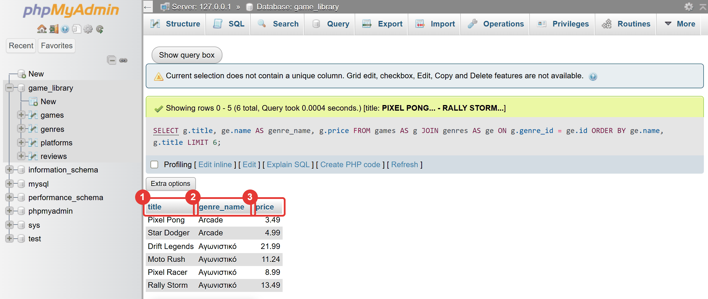
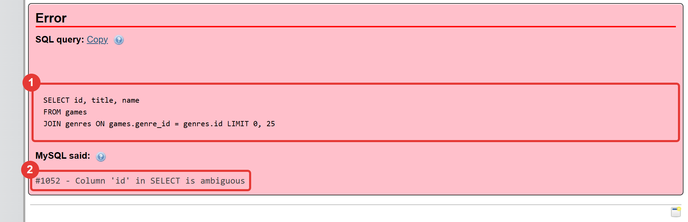
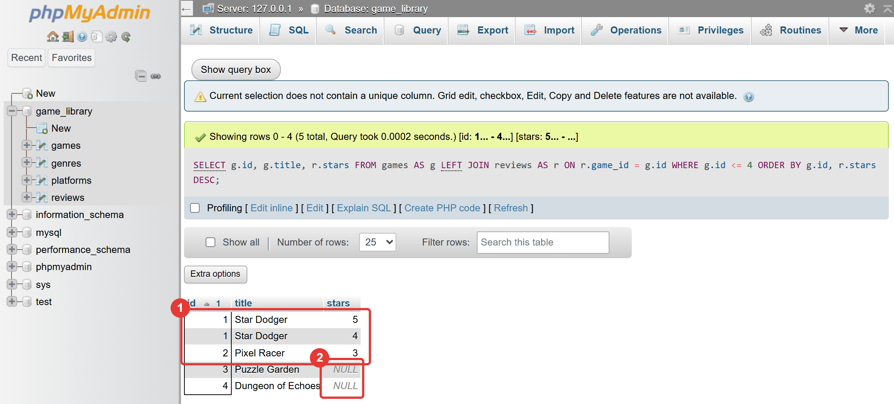

Μάθημα 12: JOIN: ερωτήματα σε πολλούς πίνακες¶
Βάση δεδομένων: INNER JOIN και LEFT JOIN: ένα αποτέλεσμα που προκύπτει από περισσότερους από έναν πίνακες
Διάρκεια: 2 κύκλοι × περίπου 45′ εργασία (2 διδακτικές ώρες)
Φύλλο εργασίας
Αυτή η σελίδα εξηγεί τις έννοιες. Οι ασκήσεις και οι οδηγίες για κάθε κύκλο βρίσκονται στο Φύλλο εργασίας 12. Δούλεψε με τις δύο σελίδες ανοιχτές.
Αρχεία εργαστηρίου¶
| Αρχείο | Κύκλος |
|---|---|
| 01-start-state.sql | πριν αρχίσεις |
| 02-inner-join.sql | 1 |
| 03-join-filter.sql | 1 |
| 04-left-join.sql | 2 |
| 05-update-join.sql | 2 |
Η αποστολή¶
Στο προηγούμενο μάθημα έσπασες τα δεδομένα σε πολλούς πίνακες: τα παιχνίδια στον games, τα είδη στον genres, οι
κριτικές στον reviews. Η βάση έγινε πιο σωστή, αλλά τώρα κάθε πίνακας δείχνει αριθμούς: ο games λέει
genre_id = 3, ο reviews λέει game_id = 9. Ποιο είδος είναι το 3; Ποιο παιχνίδι είναι το 9;
Η απάντηση είναι το JOIN: μια εντολή που ενώνει γραμμές από δύο πίνακες και σου δίνει ένα αποτέλεσμα με ονόματα
αντί για αριθμούς. Είναι η εντολή που κάνει τη χρήση πολλών πινάκων άνετη, και η πιο συχνή εντολή στις πραγματικές
εφαρμογές. Σήμερα δεν γράφεις Python: δουλεύεις στο phpMyAdmin. Στο Μάθημα 13 θα στείλεις τα ίδια ερωτήματα από πρόγραμμα.
Στο τέλος θα μπορείς¶
- να εξηγείς τι κάνει το
JOINκαι ποιος είναι ο ρόλος του όρουON. - να γράφεις
INNER JOINδύο πινάκων και να χρησιμοποιείς ψευδώνυμα πινάκων (AS g). - να λύνεις το σφάλμα «ambiguous» (
#1052) με πρόθεμα πίνακα. - να συνδυάζεις
JOINμεWHERE,ORDER BYκαιLIMIT. - να αναγνωρίζεις δύο λάθη που δεν δίνουν σφάλμα: λάθος
ONκαι ξεχασμένοON. - να γράφεις
LEFT JOINκαι να βρίσκεις γραμμές χωρίς ταίρι μεIS NULL. - να διαλέγεις ανάμεσα σε
INNER JOINκαιLEFT JOIN. - να διορθώνεις δεδομένα με
UPDATEκαιJOINσε μία εντολή.
Πριν αρχίσεις¶
- Ξεκίνα τη MySQL και τον Apache από το XAMPP Control Panel.
- Φτιάξε έναν φάκελο
12-joinμέσα στον φάκελο των μαθημάτων και κατέβασε εκεί τα πέντε αρχεία του πίνακα. Κράτησε ακριβώς τα ονόματα. - Φέρε τη βάση στην κατάσταση εκκίνησης: στο phpMyAdmin επίλεξε τη βάση
game_library, άνοιξε την καρτέλα Import, διάλεξε το01-start-state.sqlκαι πάτα Import. - Έλεγξε στην καρτέλα Browse ότι ο
gamesέχει 30 γραμμές, οgenres11, οreviews12 και οplatforms5.
Ένα νέο είδος
Ο genres έχει σήμερα 11 είδη: το τελευταίο, «Μουσικά», δεν έχει ακόμη κανένα παιχνίδι. Θα το χρειαστούμε στον
δεύτερο κύκλο.
Το αρχείο εκκίνησης σβήνει τα δεδομένα σου
Το 01-start-state.sql σβήνει τους πίνακες games, genres, reviews, platforms και players και τους
φτιάχνει από την αρχή. Αν σήμερα χαλάσεις τα δεδομένα, τρέξε το ξανά και ξεκινάς από την αρχή.
Ο κύκλος εργασίας
Πρόβλεψη → εκτέλεση → σύγκριση → εξήγηση. Σήμερα πρόβλεψε κάθε φορά πόσες γραμμές θα έχει το αποτέλεσμα. Ο
αριθμός των γραμμών είναι ο καλύτερος τρόπος να ελέγξεις ένα JOIN.
Κύκλος 1 — INNER JOIN¶
Σε αυτόν τον κύκλο ενώνεις τα παιχνίδια με τα είδη και τις κριτικές τους, και μαθαίνεις να αναγνωρίζεις τα συνηθισμένα λάθη.
1.1 Το πρόβλημα: αριθμοί αντί για ονόματα¶
Ένα SELECT από τον games δίνει το είδος ως αριθμό. Το όνομά του υπάρχει μόνο στον genres:
games genres
┌────┬───────────────┬──────────┐ ┌────┬────────────┐
│ id │ title │ genre_id │ │ id │ name │
├────┼───────────────┼──────────┤ ├────┼────────────┤
│ 1 │ Star Dodger │ 1 │ ──────────► │ 1 │ Arcade │
│ 2 │ Pixel Racer │ 2 │ ──────────► │ 2 │ Αγωνιστικό │
│ 3 │ Puzzle Garden │ 3 │ ──────────► │ 3 │ Παζλ │
└────┴───────────────┴──────────┘ └────┴────────────┘
Θέλουμε ένα αποτέλεσμα όπως αυτό, με το όνομα του είδους δίπλα σε κάθε παιχνίδι:
┌───────────────┬────────────┐
│ title │ name │
├───────────────┼────────────┤
│ Star Dodger │ Arcade │
│ Pixel Racer │ Αγωνιστικό │
│ Puzzle Garden │ Παζλ │
└───────────────┴────────────┘
1.2 Το JOIN: ζευγάρωμα γραμμών¶
Η βάση ζευγαρώνει κάθε γραμμή του games με τη γραμμή του genres που ταιριάζει, και δίνει μία ενωμένη γραμμή για
κάθε ζευγάρι:
FROM gamesείναι ο πρώτος (αριστερός) πίνακας.INNER JOIN genresπροσθέτει τον δεύτερο (δεξιό) πίνακα. ΤοINNERμπορείς να το παραλείψεις: τοJOINμόνο του σημαίνειINNER JOIN.ON games.genre_id = genres.idείναι ο κανόνας ζευγαρώματος: «ταίριαξε τις γραμμές όπου τοgenre_idτου παιχνιδιού είναι ίσο με τοidτου είδους».
Ο κανόνας του ON
Στο ON γράφεις σχεδόν πάντα: ξένο κλειδί του παιδιού = πρωτεύον κλειδί του γονέα. Εδώ
games.genre_id = genres.id. Για τον reviews: reviews.game_id = games.id.
Ο INNER JOIN κρατά μόνο τα ζευγάρια: αν μια γραμμή δεν βρει ταίρι, δεν εμφανίζεται. Με τον games και τον genres
το αποτέλεσμα έχει 30 γραμμές: όσα τα παιχνίδια, γιατί κάθε παιχνίδι έχει ακριβώς ένα είδος.

1.3 Πρόθεμα και ψευδώνυμα¶
Όταν δύο πίνακες έχουν στήλη με το ίδιο όνομα (εδώ και οι δύο έχουν id), η βάση δεν ξέρει ποια εννοείς:
(«ambiguous» σημαίνει «διφορούμενη».) Η λύση είναι το πρόθεμα του πίνακα: games.id. Επειδή τα ονόματα των πινάκων
είναι μακριά, δίνεις στον κάθε πίνακα ένα ψευδώνυμο (alias) με AS, όπως έκανες για τις στήλες στο Μάθημα 2:
SELECT g.id, g.title, ge.name AS genre_name
FROM games AS g
JOIN genres AS ge ON g.genre_id = ge.id;
- Το ψευδώνυμο το δίνεις στο
FROM/JOIN(games AS g) και το χρησιμοποιείς παντού στο ερώτημα. Αφού ορίσεις τοg, δεν μπορείς πια να γράψειςgames.title: δίνει#1054 - Unknown column 'games.title'. - Το πρόθεμα είναι υποχρεωτικό μόνο για στήλες που υπάρχουν και στους δύο πίνακες. Συνηθίζεται όμως να το γράφεις πάντα: το ερώτημα διαβάζεται αμέσως (ποια στήλη ανήκει σε ποιον πίνακα) και δεν χαλάει όταν αργότερα προστεθεί στήλη με ίδιο όνομα.
- Το
AS genre_nameείναι ψευδώνυμο στήλης (όπως στο Μάθημα 2): η στήλη του αποτελέσματος παίρνει όνομα που λέει τι είναι, αντί για το γενικόname.

Στάδιο 1 — Το πρώτο JOIN¶
Άνοιξε το 02-inner-join.sql. Συμπλήρωσε τα τρία κενά (____) και τρέξε τις εντολές μία-μία, με τη σειρά.
Πρώτα πρόβλεψε πόσες γραμμές θα έχει κάθε αποτέλεσμα.
-- Στάδιο 1 — Το πρώτο JOIN: ονόματα αντί για αριθμούς.
--
-- Πριν αρχίσεις: τρέξε το 01-start-state.sql (καρτέλα Import). Τα ερωτήματα αυτού του σταδίου δεν αλλάζουν δεδομένα.
--
-- Πώς το τρέχεις:
-- 1. Συμπλήρωσε τα κενά (____) σε έναν επεξεργαστή κειμένου.
-- 2. Τρέξε κάθε εντολή ΞΕΧΩΡΙΣΤΑ στην καρτέλα SQL της βάσης game_library, με τη σειρά.
-- 3. ΠΡΩΤΑ πρόβλεψε τι θα γίνει: πόσες γραμμές θα έχει το αποτέλεσμα, ή αν θα δώσει σφάλμα.
-- Ερώτημα 1 (έτοιμο): ο games γράφει το είδος κάθε παιχνιδιού ως ΑΡΙΘΜΟ (genre_id). Ποιο είδος είναι το 2;
SELECT id, title, genre_id
FROM games
ORDER BY id
LIMIT 5;
-- Ερώτημα 2 (έτοιμο): τα ονόματα των ειδών βρίσκονται στον άλλο πίνακα
SELECT id, name
FROM genres
ORDER BY id;
-- Ερώτημα 3: το πρώτο JOIN. Κάθε παιχνίδι «ζευγαρώνει» με τη γραμμή του genres που έχει id ίσο με το genre_id του
SELECT games.title, genres.name
FROM games
INNER ____ genres ON games.genre_id = genres.id;
-- Ερώτημα 4: το ίδιο, με ψευδώνυμα πινάκων (g, ge) και ψευδώνυμο στήλης (genre_name)
SELECT g.title, ge.name AS genre_name, g.price
FROM games AS g
JOIN genres AS ge ON g.genre_id = ge.____
ORDER BY ge.name, g.title;
-- Ερώτημα 5 (έτοιμο): ΘΑ ΔΩΣΕΙ ΣΦΑΛΜΑ. Και οι δύο πίνακες έχουν στήλη id: ποια από τις δύο εννοείς;
SELECT id, title, name
FROM games
JOIN genres ON games.genre_id = genres.id;
-- Ερώτημα 6: διόρθωσε το ερώτημα 5: γράψε μπροστά από το id το ψευδώνυμο του πίνακα games
SELECT ____.id, g.title, ge.name
FROM games AS g
JOIN genres AS ge ON g.genre_id = ge.id;
-- Ερώτημα 7 (έτοιμο): πόσες γραμμές έχει το αποτέλεσμα του JOIN;
SELECT COUNT(*) AS rows_n
FROM games AS g
JOIN genres AS ge ON g.genre_id = ge.id;
1.4 JOIN με WHERE, ORDER BY και LIMIT¶
Όσα έμαθες στα Μαθήματα 4 και 10 δουλεύουν όπως πριν. Το WHERE φιλτράρει το ενωμένο αποτέλεσμα, οπότε μπορείς
να ζητήσεις είδος με το όνομά του, χωρίς να ξέρεις το id του:
SELECT g.title, g.price
FROM games AS g
JOIN genres AS ge ON g.genre_id = ge.id
WHERE ge.name = 'Παζλ' AND g.price < 3
ORDER BY g.price;
Η σειρά των φράσεων είναι: SELECT → FROM → JOIN … ON → WHERE → ORDER BY → LIMIT.
Μπορείς να ενώσεις και τον reviews με τον games, για να δεις τον τίτλο κάθε κριτικής. Πρόσεξε ότι κάθε παιχνίδι
εμφανίζεται μία φορά για κάθε κριτική του: αυτό είναι το «ένα-προς-πολλά» στην πράξη.
Δύο λάθη χωρίς σφάλμα¶
Τα πιο επικίνδυνα λάθη στο JOIN δεν δίνουν μήνυμα σφάλματος. Το αποτέλεσμα βγαίνει, απλώς είναι λάθος:
| Λάθος | Παράδειγμα | Τι γίνεται |
|---|---|---|
Λάθος στήλες στο ON |
ON g.id = ge.id αντί για ON g.genre_id = ge.id |
Ζευγαρώνει το id του παιχνιδιού με το id του είδους: βγαίνουν μόνο 11 γραμμές (όσα id υπάρχουν και στους δύο πίνακες), και κάποια είδη είναι λάθος (το «Mini Golf» βγαίνει «Μουσικά»). Τα πρώτα αποτελέσματα μπορεί να μοιάζουν σωστά, από σύμπτωση. |
Ξεχασμένο ON |
FROM games JOIN genres |
Η MariaDB ζευγαρώνει κάθε γραμμή με κάθε γραμμή: 30 × 11 = 330 γραμμές (το λένε καρτεσιανό γινόμενο). |
Μέτρα πάντα τις γραμμές
Ένα JOIN με λάθος ON μοιάζει σωστό. Πριν εμπιστευτείς το αποτέλεσμα, ρώτα τον εαυτό σου πόσες γραμμές
περιμένεις, και έλεγξε το «Showing rows … (N total)» του phpMyAdmin (ή ένα COUNT(*)). Εδώ περιμένεις 30: τόσα
είναι τα παιχνίδια.
Στάδιο 2 — Φίλτρα και λάθη¶
Άνοιξε το 03-join-filter.sql. Συμπλήρωσε τα τέσσερα κενά και τρέξε τις εντολές μία-μία, με τη σειρά.
-- Στάδιο 2 — JOIN με φίλτρα, ταξινόμηση και δύο συνηθισμένα λάθη.
--
-- Πριν αρχίσεις: η βάση πρέπει να είναι όπως την άφησε το 01-start-state.sql. Τα ερωτήματα αυτού του σταδίου δεν
-- αλλάζουν δεδομένα.
--
-- Πώς το τρέχεις:
-- 1. Συμπλήρωσε τα κενά (____) σε έναν επεξεργαστή κειμένου.
-- 2. Τρέξε κάθε εντολή ΞΕΧΩΡΙΣΤΑ στην καρτέλα SQL της βάσης game_library, με τη σειρά.
-- 3. ΠΡΩΤΑ πρόβλεψε τι θα γίνει: πόσες γραμμές θα έχει το αποτέλεσμα, ή αν θα δώσει σφάλμα.
-- Ερώτημα 1: τα παιχνίδια του είδους «Παζλ» (με το ΟΝΟΜΑ του είδους, όχι με το id) που κοστίζουν λιγότερο από 3 €,
-- φθηνότερα πρώτα
SELECT g.title, g.price
FROM games AS g
JOIN genres AS ge ON g.genre_id = ge.id
WHERE ge.name = '____' AND g.price < ____
ORDER BY g.price;
-- Ερώτημα 2 (έτοιμο): ΛΑΘΟΣ, ΧΩΡΙΣ ΣΦΑΛΜΑ. Εδώ ο όρος ON ζευγαρώνει το id του παιχνιδιού με το id του είδους.
-- Πόσες γραμμές περιμένεις; Πόσες βγαίνουν;
SELECT g.id, g.title, ge.name
FROM games AS g
JOIN genres AS ge ON g.id = ge.id;
-- Ερώτημα 3: διόρθωσε τον όρο ON: το παιχνίδι ζευγαρώνει με το είδος του μέσω του ξένου κλειδιού
SELECT g.id, g.title, ge.name
FROM games AS g
JOIN genres AS ge ON g.____ = ge.id;
-- Ερώτημα 4 (έτοιμο): ΑΛΛΟ ΛΑΘΟΣ, ΧΩΡΙΣ ΣΦΑΛΜΑ. Ξέχασες τον όρο ON: κάθε παιχνίδι ζευγαρώνει με ΚΑΘΕ είδος
SELECT COUNT(*) AS rows_n
FROM games
JOIN genres;
-- Ερώτημα 5: οι κριτικές μαζί με τον τίτλο του παιχνιδιού τους. Το ξένο κλειδί του reviews είναι το game_id
SELECT g.title, r.stars, r.comment
FROM reviews AS r
JOIN games AS g ON r.____ = g.id
ORDER BY g.title, r.stars DESC;
-- Ερώτημα 6 (έτοιμο): μόνο οι κριτικές του «Turbo Kart Cup». Το παιχνίδι εμφανίζεται ΜΙΑ φορά για κάθε κριτική του
SELECT g.title, r.stars
FROM reviews AS r
JOIN games AS g ON r.game_id = g.id
WHERE g.title = 'Turbo Kart Cup';
Συνέχισε στο Φύλλο εργασίας.
Κύκλος 2 — LEFT JOIN¶
Στον δεύτερο κύκλο ρωτάς πράγματα που ο INNER JOIN δεν μπορεί να απαντήσει: ποια παιχνίδια δεν έχουν κριτική, και ποια
είδη δεν έχουν παιχνίδια.
2.1 Τι χάνει το INNER JOIN¶
Ένωσε τα παιχνίδια με τις κριτικές τους με INNER JOIN:
Βγαίνουν 12 γραμμές: τόσες είναι οι κριτικές. Όμως όλες αφορούν μόνο 7 διαφορετικά παιχνίδια. Τα άλλα 23 παιχνίδια
δεν εμφανίζονται καθόλου, γιατί δεν βρήκαν ταίρι στον reviews. Ο INNER JOIN κρατά μόνο τα ζευγάρια.
2.2 Το LEFT JOIN¶
Ο LEFT JOIN κρατά όλες τις γραμμές του αριστερού πίνακα (αυτού που γράφεις στο FROM). Όπου δεν υπάρχει ταίρι,
οι στήλες του δεξιού πίνακα γίνονται NULL:
games (αριστερός) reviews (δεξιός)
Star Dodger ──────────► stars = 5 ┐ δύο κριτικές: δύο γραμμές
Star Dodger ──────────► stars = 4 ┘
Pixel Racer ──────────► stars = 3
Puzzle Garden ──────────► NULL (καμία κριτική: μία γραμμή με NULL)
Το αποτέλεσμα έχει 35 γραμμές: οι 12 γραμμές του INNER JOIN και άλλες 23, μία για κάθε παιχνίδι χωρίς κριτική.

2.3 Ποια παιχνίδια δεν έχουν κριτική;¶
Τα παιχνίδια χωρίς κριτική είναι αυτά που έχουν NULL στις στήλες του reviews. Τα βρίσκεις με IS NULL (όχι με = NULL,
το ξέρεις από το Μάθημα 8):
SELECT g.title, g.price
FROM games AS g
LEFT JOIN reviews AS r ON r.game_id = g.id
WHERE r.id IS NULL;
Έλεγξε τη στήλη r.id, το πρωτεύον κλειδί του reviews: σε μια πραγματική κριτική δεν είναι ποτέ NULL, οπότε αν
είναι NULL, σημαίνει ότι δεν βρέθηκε κριτική. Είναι ένα μοτίβο που θα χρησιμοποιείς συχνά: LEFT JOIN + IS NULL
στο κλειδί του δεξιού πίνακα = «όσα δεν έχουν ταίρι». Εδώ βγαίνουν 23 παιχνίδια.
2.4 Η σειρά των πινάκων μετράει¶
Ο αριστερός πίνακας είναι αυτός που κρατά όλες τις γραμμές του. Αν θέλεις να βρεις είδη χωρίς παιχνίδια, το genres
πρέπει να είναι αριστερά:
Εμφανίζεται το είδος «Μουσικά». Με INNER JOIN τα genres και games δίνουν 30 γραμμές, με LEFT JOIN 31: η έξτρα
γραμμή είναι το «Μουσικά» με NULL στις στήλες του games.
Και το RIGHT JOIN;
Υπάρχει και το RIGHT JOIN, που κρατά όλες τις γραμμές του δεξιού πίνακα. Δεν το χρειάζεσαι: αρκεί να
αλλάξεις τη σειρά των πινάκων και να γράψεις LEFT JOIN. Στο μάθημα χρησιμοποιούμε μόνο το LEFT JOIN.
Στάδιο 3 — LEFT JOIN¶
Άνοιξε το 04-left-join.sql. Συμπλήρωσε τα τέσσερα κενά και τρέξε τις εντολές μία-μία, με τη σειρά.
-- Στάδιο 3 — LEFT JOIN: κράτα και τις γραμμές που δεν έχουν ταίρι.
--
-- Πριν αρχίσεις: η βάση πρέπει να είναι όπως την άφησε το 01-start-state.sql. Τα ερωτήματα αυτού του σταδίου δεν
-- αλλάζουν δεδομένα.
--
-- Πώς το τρέχεις:
-- 1. Συμπλήρωσε τα κενά (____) σε έναν επεξεργαστή κειμένου.
-- 2. Τρέξε κάθε εντολή ΞΕΧΩΡΙΣΤΑ στην καρτέλα SQL της βάσης game_library, με τη σειρά.
-- 3. ΠΡΩΤΑ πρόβλεψε τι θα γίνει: πόσες γραμμές θα έχει το αποτέλεσμα, ή αν θα δώσει σφάλμα.
-- Ερώτημα 1 (έτοιμο): INNER JOIN παιχνιδιών και κριτικών. Πόσες γραμμές βγαίνουν; Πόσα διαφορετικά παιχνίδια φαίνονται;
SELECT g.title, r.stars
FROM games AS g
JOIN reviews AS r ON r.game_id = g.id
ORDER BY g.title;
-- Ερώτημα 2: το ίδιο με LEFT JOIN: όλα τα παιχνίδια του αριστερού πίνακα, με κριτική ή χωρίς
SELECT g.title, r.stars
FROM games AS g
____ JOIN reviews AS r ON r.game_id = g.id
ORDER BY g.title;
-- Ερώτημα 3: μόνο τα παιχνίδια ΧΩΡΙΣ καμία κριτική (εκεί που το ταίρι από τον reviews είναι NULL)
SELECT g.title, g.price
FROM games AS g
LEFT JOIN reviews AS r ON r.game_id = g.id
WHERE r.id IS ____
ORDER BY g.title;
-- Ερώτημα 4: ποια είδη δεν έχουν κανένα παιχνίδι; Η σειρά των πινάκων μετράει: ο ΑΡΙΣΤΕΡΟΣ πίνακας είναι αυτός που
-- κρατά όλες τις γραμμές του
SELECT ge.name
FROM ____ AS ge
LEFT JOIN games AS g ON g.genre_id = ge.id
WHERE g.id IS NULL;
-- Ερώτημα 5 (έτοιμο): πόσες γραμμές δίνει το INNER JOIN και πόσες το LEFT JOIN, για τα είδη και τα παιχνίδια;
SELECT COUNT(*) AS inner_rows
FROM genres AS ge
JOIN games AS g ON g.genre_id = ge.id;
SELECT COUNT(*) AS left_rows
FROM genres AS ge
LEFT JOIN games AS g ON g.genre_id = ge.id;
-- Ερώτημα 6 (έτοιμο): ΠΑΓΙΔΑ. Θέλεις όλα τα παιχνίδια, με τα αστέρια ΜΟΝΟ όπου είναι 4 ή περισσότερα. Με το φίλτρο στο
-- WHERE, πόσες γραμμές βγαίνουν; Τι έγινε με τα παιχνίδια χωρίς κριτική;
SELECT g.title, r.stars
FROM games AS g
LEFT JOIN reviews AS r ON r.game_id = g.id
WHERE r.stars >= 4
ORDER BY g.title;
-- Ερώτημα 7: το ίδιο φίλτρο, αλλά ως μέρος του όρου ON
SELECT g.title, r.stars
FROM games AS g
LEFT JOIN reviews AS r ON r.game_id = g.id ____ r.stars >= 4
ORDER BY g.title;
2.5 Παγίδα: φίλτρο στο WHERE ή στο ON;¶
Θέλεις όλα τα παιχνίδια, με τα αστέρια τους μόνο όπου είναι 4 ή περισσότερα. Δύο δοκιμές:
| Φίλτρο | Γραμμές | Τι γίνεται |
|---|---|---|
LEFT JOIN … ON r.game_id = g.id WHERE r.stars >= 4 |
8 | Το WHERE ελέγχεται μετά το ζευγάρωμα. Τα παιχνίδια χωρίς κριτική έχουν stars = NULL, το NULL >= 4 δεν ισχύει, και οι γραμμές τους σβήνονται. Το LEFT JOIN συμπεριφέρεται σαν INNER JOIN. |
LEFT JOIN … ON r.game_id = g.id AND r.stars >= 4 |
33 | Το φίλτρο είναι μέρος του κανόνα ζευγαρώματος: «ταίριαξε μόνο κριτικές με 4+ αστέρια». Όλα τα παιχνίδια μένουν (όσα δεν έχουν τέτοια κριτική παίρνουν NULL). |
Κανόνας: το φίλτρο που αφορά τον αριστερό πίνακα (π.χ. g.price > 15) μπαίνει στο WHERE. Το φίλτρο που
περιγράφει ποια γραμμές του δεξιού πίνακα μετράνε, όταν θέλεις να κρατήσεις και τα παιχνίδια χωρίς ταίρι, μπαίνει στο
ON.
2.6 JOIN και UPDATE: μία εντολή αντί για πολλές¶
Στο Μάθημα 11 έγραψες δέκα UPDATE (ένα ανά είδος) για να γεμίσεις τη genre_id. Με JOIN γίνεται με μία:
Η σύνταξη είναι: UPDATE πίνακας AS α JOIN άλλος AS β ON … SET α.στήλη = β.στήλη. Η βάση ενώνει τις γραμμές όπως σε ένα
SELECT και αντιγράφει τιμές από τον έναν πίνακα στον άλλο.
Στο Μάθημα 11 είδες και το πρόβλημα της διπλής αλήθειας: αν μετονομάσεις το είδος 3, ο genres λέει «Γρίφοι» αλλά η
παλιά στήλη games.genre λέει ακόμη «Παζλ». Με το JOIN βρίσκεις τις γραμμές που διαφωνούν και τις διορθώνεις:
-- βρες όσα διαφωνούν (το <> σημαίνει «διαφορετικό από»)
SELECT g.id, g.title, g.genre, ge.name
FROM games AS g
JOIN genres AS ge ON g.genre_id = ge.id
WHERE g.genre <> ge.name;
-- διόρθωσέ τα με μία εντολή
UPDATE games AS g
JOIN genres AS ge ON g.genre_id = ge.id
SET g.genre = ge.name;
Πρόσεχε τον UPDATE με JOIN
Όπως στο Μάθημα 6, ο UPDATE αλλάζει δεδομένα. Γράψε και τρέξε πρώτα το αντίστοιχο SELECT με το ίδιο JOIN,
ώστε να δεις ποιες γραμμές θα επηρεαστούν.
Στάδιο 4 — JOIN και UPDATE¶
Άνοιξε το 05-update-join.sql. Συμπλήρωσε τα δύο κενά και τρέξε τις εντολές μία-μία, με τη σειρά. Στο τέλος η βάση
επανέρχεται στην αρχική της κατάσταση.
-- Στάδιο 4 — JOIN και UPDATE: μία εντολή αντί για πολλές.
--
-- Πριν αρχίσεις: η βάση πρέπει να είναι όπως την άφησε το 01-start-state.sql. Σε αυτό το στάδιο αλλάζεις δεδομένα,
-- αλλά στο τέλος τα επαναφέρεις.
--
-- Πώς το τρέχεις:
-- 1. Συμπλήρωσε τα κενά (____) σε έναν επεξεργαστή κειμένου.
-- 2. Τρέξε κάθε εντολή ΞΕΧΩΡΙΣΤΑ στην καρτέλα SQL της βάσης game_library, με τη σειρά.
-- 3. ΠΡΩΤΑ πρόβλεψε τι θα γίνει: πόσες γραμμές θα έχει το αποτέλεσμα, ή αν θα δώσει σφάλμα.
-- Ερώτημα 1 (έτοιμο): συμφωνεί η στήλη genre (κείμενο) με το όνομα του είδους που δείχνει η genre_id;
-- (Το <> σημαίνει «διαφορετικό από».) Δεν πρέπει να βγει καμία γραμμή
SELECT g.id, g.title, g.genre, ge.name
FROM games AS g
JOIN genres AS ge ON g.genre_id = ge.id
WHERE g.genre <> ge.name;
-- Ερώτημα 2 (έτοιμο): μετονόμασε το είδος 3, όπως στο Μάθημα 11
UPDATE genres
SET name = 'Γρίφοι'
WHERE id = 3;
-- Ερώτημα 3: ξανατρέξε τον έλεγχο. Βρες τα παιχνίδια όπου το κείμενο genre διαφέρει από το όνομα του είδους
SELECT g.id, g.title, g.genre, ge.name
FROM games AS g
JOIN genres AS ge ON g.genre_id = ge.id
WHERE g.genre ____ ge.name;
-- Ερώτημα 4: διόρθωσε το κείμενο genre ΜΕ ΜΙΑ ΕΝΤΟΛΗ: αντίγραψε το όνομα του είδους στη στήλη genre κάθε παιχνιδιού
UPDATE games AS g
JOIN genres AS ge ON g.genre_id = ge.id
SET g.genre = ge.____;
-- Ερώτημα 5 (έτοιμο): ο έλεγχος ξανά: τώρα δεν πρέπει να βγει καμία γραμμή
SELECT g.id, g.title, g.genre, ge.name
FROM games AS g
JOIN genres AS ge ON g.genre_id = ge.id
WHERE g.genre <> ge.name;
-- Ερώτημα 6 (έτοιμο): επανάφερε το όνομα του είδους και συγχρόνισε ξανά το κείμενο
UPDATE genres
SET name = 'Παζλ'
WHERE id = 3;
UPDATE games AS g
JOIN genres AS ge ON g.genre_id = ge.id
SET g.genre = ge.name;
-- Ερώτημα 7 (έτοιμο): θυμάσαι τα δέκα UPDATE του Μαθήματος 11; Αυτή η ΜΙΑ εντολή κάνει την ίδια δουλειά: γεμίζει τη
-- genre_id από το κείμενο genre. Εδώ όλα έχουν ήδη σωστή τιμή, οπότε δεν αλλάζει τίποτα («0 rows affected»)
UPDATE games AS g
JOIN genres AS ge ON g.genre = ge.name
SET g.genre_id = ge.id;
2.7 Ποιο JOIN να διαλέξω;¶
| Θέλω… | Παράδειγμα | Χρησιμοποιώ |
|---|---|---|
| μόνο τις γραμμές που έχουν ταίρι | παιχνίδια με το όνομα του είδους τους, κριτικές με τον τίτλο τους | INNER JOIN |
| όλες τις γραμμές ενός πίνακα, με ή χωρίς ταίρι | όλα τα παιχνίδια, με τα αστέρια τους όπου υπάρχουν | LEFT JOIN |
| όσες γραμμές δεν έχουν ταίρι | παιχνίδια χωρίς κριτική, είδη χωρίς παιχνίδια | LEFT JOIN + IS NULL |
Συνέχισε στο Φύλλο εργασίας, Κύκλος 2.
Έλεγχος πριν ολοκληρώσεις¶
- □ Το ερώτημα 3 του Σταδίου 1 έδωσε 30 γραμμές, και ξέρεις γιατί.
- □ Είδες το σφάλμα
#1052και το διόρθωσες με πρόθεμα. - □ Στο Στάδιο 2 είδες 11 γραμμές με λάθος
ONκαι 330 με ξεχασμένοON, και εξήγησες γιατί. - □ Στο Στάδιο 3 βρήκες τα 23 παιχνίδια χωρίς κριτική και το είδος «Μουσικά» χωρίς παιχνίδια.
- □ Μπορείς να εξηγήσεις τη διαφορά ανάμεσα σε φίλτρο στο
WHEREκαι στοONσε έναLEFT JOIN. - □ Στο Στάδιο 4 η βάση επανήλθε: καμία γραμμή δεν διαφωνεί, και το είδος 3 λέγεται ξανά «Παζλ».
- □ Όταν τελείωσες, σταμάτησες τον Apache και τη MySQL.
Για να θυμάσαι¶
- Το
JOINζευγαρώνει γραμμές δύο πινάκων με τον όροON: συνήθωςπαιδί.ξένο_κλειδί = γονέας.id. INNER JOIN(ή απλώςJOIN) κρατά μόνο τα ζευγάρια.LEFT JOINκρατά όλες τις γραμμές του αριστερού πίνακα, μεNULLόπου δεν υπάρχει ταίρι.- Όσες γραμμές δεν έχουν ταίρι:
LEFT JOIN+WHERE δεξιός.id IS NULL. - Ψευδώνυμα πινάκων (
games AS g) και πρόθεμα σε κάθε στήλη (g.title). Στήλη με ίδιο όνομα σε δύο πίνακες χωρίς πρόθεμα δίνει#1052. - Τα λάθη χωρίς σφάλμα: λάθος
ON(λάθος αριθμός γραμμών) και ξεχασμένοON(καρτεσιανό γινόμενο, 30 × 11 = 330). Πάντα μέτρα τις γραμμές. - Σε
LEFT JOIN, φίλτρο στον δεξιό πίνακα μέσα στοWHEREσβήνει ταNULLκαι ακυρώνει τοLEFT. Βάλε το στοON. UPDATE α JOIN β ON … SET α.στήλη = β.στήληαντιγράφει τιμές από πίνακα σε πίνακα. Πρώτα δοκίμασε τοSELECT.
Λεξιλόγιο¶
JOIN (ένωση πινάκων), INNER JOIN, LEFT JOIN, ON (όρος ζευγαρώματος), ψευδώνυμο (alias),
πρόθεμα πίνακα, διφορούμενη (ambiguous) στήλη, καρτεσιανό γινόμενο, ταίρι, <> (διαφορετικό από).
Δική σου εκδοχή¶
Αν τελειώσεις νωρίτερα, δούλεψε με μία αλλαγή τη φορά:
- Πρόσθεσε μια νέα κριτική σε ένα παιχνίδι που δεν έχει (π.χ.
INSERT INTO reviews (game_id, stars, comment) VALUES (4, 5, 'Δύσκολο αλλά υπέροχο');) και ξανατρέξε το ερώτημα 3 του Σταδίου 3. Πόσα παιχνίδια χωρίς κριτική βγαίνουν τώρα; (Μετά σβήσε την κριτική, για να μείνουν τα δεδομένα όπως ήταν.) - Πρόκληση 1: πόσες κριτικές έχει κάθε παιχνίδι, και τα παιχνίδια με μηδέν κριτικές; Χρειάζεσαι
LEFT JOIN,GROUP BY g.id, g.titleκαιCOUNT(r.id). Τι θα έδινε τοCOUNT(*)αντί γιαCOUNT(r.id); (Θυμήσου το Μάθημα 10.) - Πρόκληση 2: γράψε το
JOINτωνgamesκαιgenresμε την παλιά σύνταξηFROM games AS g, genres AS ge WHERE g.genre_id = ge.id. Δίνει τις ίδιες γραμμές; Δοκίμασε μετά έναLEFT JOINχωρίςON: τι σφάλμα βγαίνει; - Πρόκληση 3: ξαναγράψε το ερώτημα 4 του Σταδίου 3 (είδη χωρίς παιχνίδια) με
RIGHT JOIN, αλλάζοντας τη σειρά των πινάκων στοFROM. Δίνει το ίδιο αποτέλεσμα;